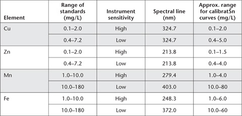

Although the DTPA-TEA-CaCl2 extractant (Method 12A1) has wide use for assessing the Cu and Zn status of soils, its value as a diagnostic tool to predict trace metal impurities has been questioned (e.g. Haq and Miller 1972; Singh et al. 1977; Grundon and Best 1982).
Trierweiler and Lindsay (1969) found a short extraction (30 min) with 0.01 M EDTA buffered at pH 8.6 with 1 M (NH4)2CO3 gave the best separation of Zn deficient soils from non-deficient soils in their study. They suggested the method offered a satisfactory theoretical basis for application to both neutral and high-lime soils, as the extractant suppresses dissolution of carbonates and oxides.
Best et al. (1985) used a similar extractant (0.01 M EDTA buffered with NH4HCO3 at pH 8.6) for assessing Cu deficiency in soils with a pH range of 5.8–8.8. Some of the alkaline soils contained free carbonates (EK Best, pers. comm.).
The method given is that of Best et al. (1985), except that soil extraction is at ≈25°C. Suggested critical values for dry matter production of wheat and grain yield of wheat are 0.4 and 0.3 mg Cu/kg, respectively. The method has also shown promise for the prediction of Zn deficiency in soils of neutral to high pH from the Darling Downs, Queensland (EK Best, pers. comm.).
EDTA + NH4 HCO3 – Extracting Solution
Dissolve 3.82 g disodium EDTA (C10H24N2Na2O8.2H2O) in 200 mL deionised water. Dissolve 79.06 g ammonium bicarbonate (NH4HCO3) in 600 mL deionised water and add to the EDTA solution. Dilute to ≈950 mL and adjust pH to 8.6 ± 0.05 using ammonia solution (NH4OH). Dilute to 1 L with deionised water.
Copper Primary Standard
1 mL contains 1 mg of Cu.
As for Method 12A1.
Zinc Primary Standard
1 mL contains 1 mg of Zn.
As for Method 12A1.
Mixed Secondary Standard
Take 10 mL Cu Primary Standard and 10 mL Zn Primary Standard and dilute with deionised water to 1.0 L. This solution contains 10 and 10 mg/L of Cu and Zn respectively.
Mixed Working Standard
Add 0, 2.5, 5.0, 7.5 ... 50 mL of freshly prepared Mixed Secondary Standard to separate 250 mL volumetric flasks. Dilute to 250 mL with deionised water. These solutions contain 0, 0.1, 0.2, 0.3 … 2.0 mg/L of both Cu and Zn. For a 1:2 soil/solution ratio these standards contain Cu and Zn equivalent to soil concentrations of 0, 0.2, 0.4, 0.6 ... 4.0 mg Cu and Zn/kg of soil.
A reagent blank with no soil should be included with each batch of samples.
Weigh 10 g of air-dry soil (<2 mm) into a suitable plastic extracting container (see Note 1). Add 20 mL of extractant and stopper container. Shake for 30 min on an end-over-end shaker at constant temperature (≈25°C). Filter (Whatman No. 42 paper) or centrifuge to obtain a particle-free extract.
Both Cu and Zn concentrations in the extracting solution should be determined without delay, using ICPAES or AAS. Follow manufacturer’s recommendations with respect to instrument parameters and spectral lines. For some guidelines, see Notes 2 and 3 and Table 12.4 of Method 12A1.
Using working standards, determine concentrations of Cu and Zn directly (mg/kg) from the appropriate calibration curve or regression, after adjusting for any significant reagent blank.
Report each element (Cu, Zn; mg/kg) on an air-dry basis.
1. All laboratory ware should be soaked in a HNO3/HCl/H2O bath (1:1:8) overnight then washed three times with deionised water before use.
Table 12.4. Typical instrument parameters for analysis of DTPA soil extracts by AAS.
